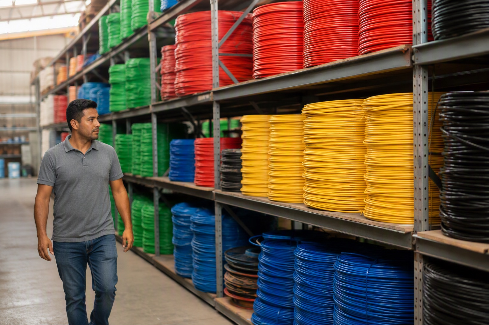

Finolex vs Polycab vs RR Kabel vs KEI: Which House Wire Should You Buy?

Ask five electricians which wire brand is "the best" and you will likely get five different answers, each defended with equal confidence. The honest answer is that Finolex, Polycab, RR Kabel and KEI are all established, widely used brands in the Indian market, and each has built its reputation on a slightly different strength. This guide lays out what each brand is generally known for, so you can match the brand to your own budget and requirement rather than someone else's opinion.
What each brand is generally known for
Finolex is one of the longest-standing names in Indian house wiring, built on a reputation for consistent FR and FR-LSH insulated wire that has been the default choice in homes for decades. Polycab is India's largest wire and cable manufacturer by scale, with a broad range that stretches from house wire into a wide FMEG catalogue. RR Kabel has built strong recognition around its FireX and HF flame-retardant wire ranges, alongside a fast-growing FMEG portfolio. KEI carries a strong industrial and power-cable pedigree and is well trusted for housing wires that draw on that same manufacturing heritage.
A simple side-by-side view
| Brand | Generally known for | Typical price position | Best for |
|---|---|---|---|
| Finolex | Long-trusted FR / FR-LSH house wire | Mid to premium | Buyers who want the most familiar, long-established name |
| Polycab | Scale and the widest FMEG range | Mid | Projects needing wire plus a broad range of fittings from one brand |
| RR Kabel | FireX / HF flame-retardant ranges | Mid | Buyers prioritising flame-retardant and heat-resistant specification |
| KEI | Power-cable pedigree carried into housing wire | Economical to mid | Value-conscious buyers who still want an industrial-grade heritage |
Price positions above are relative to each other and can shift with copper prices, grade and gauge — always confirm current rates rather than relying on general positioning.
So which one should you actually buy?
There is no single "best" brand across the board — the right pick depends on your budget, the grade of wire your project needs, and sometimes simply which brand your electrician is most comfortable installing. A premium living-room circuit and a utility-area circuit do not need to use the same grade, and a like-for-like comparison across brands only means something when you are comparing an equivalent specification — same gauge, same FR or FRLS grade, same coil length.
Compare all four on one quote
Rather than visiting four different shops and collecting four inconsistent quotes, it is far easier to get exact, current pricing across Finolex, Polycab, RR Kabel and KEI from a single distributor and compare them side by side. Mount Cable stocks all four brands and can quote your exact wire list across each one. Read our brand guides for Finolex, Polycab, RR Kabel and KEI for more detail on each range, check our live price lists for today's rates, or WhatsApp your wire list to +91 88676 76700 and request a quote comparing all four brands in one reply.
Frequently asked questions
Which is the best house wire brand in India?
How much do prices differ between these brands?
What actually differs between the major wire brands?
Should I use one brand throughout the house?
How do I compare quotes for different brands fairly?
Ready to order for your home?
Upload your wiring list for an instant quote — 100% original material, free next-day delivery across Bangalore.